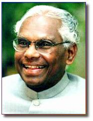

A profile by Murali Nair

Malayalees all over the world felt proud when Sri K. R. Narayanan was elected as the seventh President of India, the highest elected office in the country, in June 1997. A closer look at the personality and background of Sri Narayanan would only increase our admiration for him, particularly because of the low profile he maintained throughout his years in public service.
Kocheril Raman Narayanan was born at Uzhavoor in Central Kerala on 27 th October 1920 as the fourth of the seven children of Raman Vaidyan, a dalit traditional medical practitioner. Like many families of the time, Narayanan's family experienced extreme social (due to the caste system) and economic hardship. In spite of this, his family was keen on ensuring best possible education to young Narayanan from the age of four. However, limited economic means meant that he had to go through personal difficulties during his school days, like walking 10 miles every day to school and later to the CMS college in Kottayam. Many a time he had to face embarrassing situation for late payment of fees, until he obtained merit scholarship from the intermediate level (11+) and passed the BA (Literature) Honours examination from the Maharaja's College, Thiruvananthapuram. He won the first rank in the University of Travancore.
The university denied him a chance to work as a lecturer, which he well merited and desperately wanted, simply because he hailed from a backward community. Instead the authorities offered him the job of a clerk, which he did not accept. In protest, he refused to accept his degree. Fifty years later, when he had become the Vice President of India, the same university requested him to accept the degree, which he gracefully accepted. It was then revealed by the University’s vice - chancellor that Narayanan had been the only student to score 60 percent in the BA Honours examination of 1943, which was a rare achievement in those days. Perhaps that was the first of the many firsts for which Narayanan would be known and respected by the world.
After unsuccessful attempts to become a full time teacher, Narayanan left for Delhi to try and become journalist. After a month as an assistant at the Indian Overseas Department in Delhi, he quit and joined the Economic Weekly for Commerce and Industry as journalist, as journalism was his passion. While working there he wrote to J. R. D. Tata, the industrialist, seeking the scholarship that eventually took him to the London School of Economics. As a journalist, he sought and got a cherished interview with Mahatma Gandhi.
On return from London, Narayanan was inducted to the prestigious Indian Foreign Service, and represented India as a diplomat in many important world capitals. While posted in Burma, he met Mark Twint, his future wife who later changed her name to Usha. He has the distinction to have been India's ambassador in the Soviet Union, China and the United States of America - last posting ending in 1984 - countries with which India's equation was very critical due to geo - political alliances.
It was only after retiring from the Foreign Service in 1984, he entered into active political life, and became an MP in the 1984 elections from Ottappalam in Kerala, and became the Minister for Science and Technology in Rajiv Gandhi’s government. As a politician, Sri Narayanan was respected by all in the political system. After serving five years as Vice President, the support for his candidature for Presidency was almost unanimous across the political spectrum.. There is no one more deserving or more qualified than him to occupy that august office.